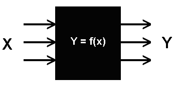
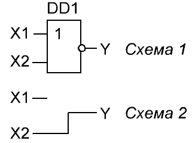
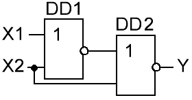
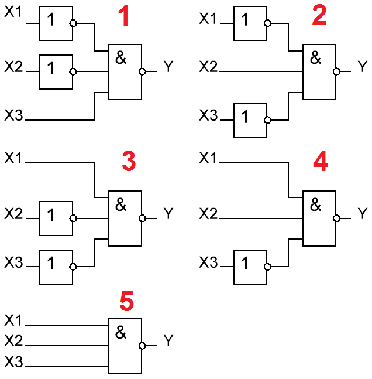
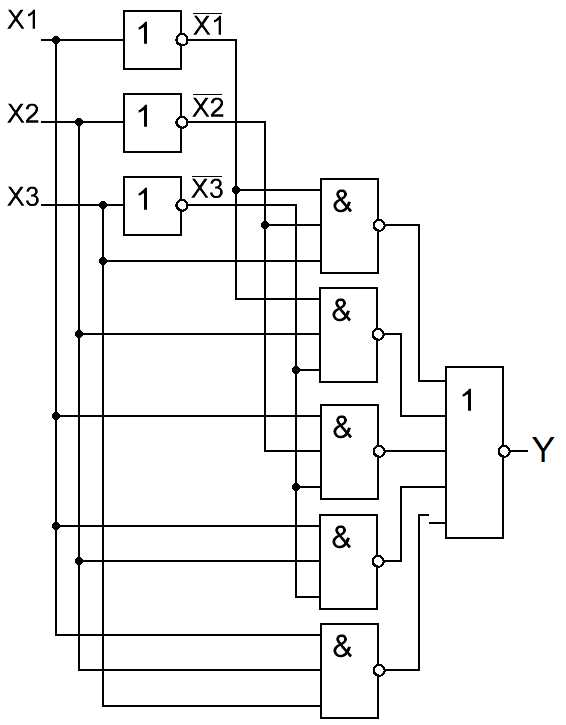
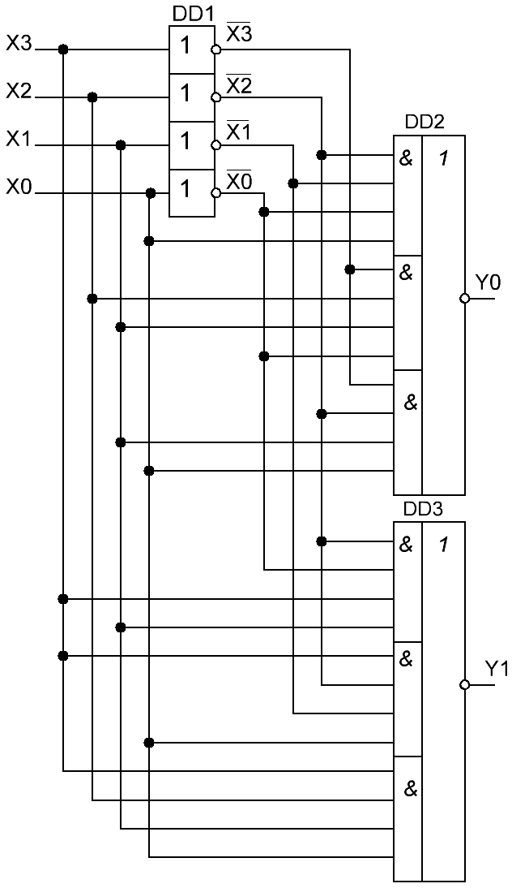

Синтез цифровых схем
В электронике довольно часто используют понятие «черный ящик». В электронике «черный ящик» – это некая схема, которая имеет некоторое количество входов и выходов, и мы точно знаем, как она себя ведет. То есть, можно предсказать, что получится на выходе, если на вход подать определенный сигнал. Схема черного ящика описывается математическим выражением вида:
y = f(x),
где
х – входной сигнал
y – выходной сигнал.

Пусть имеется некий элемент с двумя входами и одним выходом, и известна его таблица истинности (табл. 1). Необходимо разработать схему этого элемента на основе логических элементов.
Таблица 1
| X1 | X2 | Y |
|---|---|---|
| 0 | 0 | 1 |
| 0 | 1 | 1 |
| 1 | 0 | 0 |
| 1 | 1 | 1 |
Для этого необходимо рассмотреть позиции таблицы истинности, в которых выходной сигнал равен 1.
Из таблицы 2 видно, что единица на входе X2 в любом случае приводит к единице на выходе.
Таблица 2
| X1 | X2 | Y |
|---|---|---|
| 0 | 0 | 1 |
| 0 | 1 | 1 |
| 1 | 0 | 0 |
| 1 | 1 | 1 |
Значит, мы можем соединить вход X2 напрямую с выходом Y. Но есть еще одна единица на выходе – когда на оба входа поданы нули. Это можно реализовать с помощью элемента «ИЛИ-НЕ» (рис. 2).

Объединим эти две схемы в одну. Необходимо помнить, что непосредственно соединять цифровые выходы нельзя. Значит надо их соединить через элемент, который должен выдавать единицу на выход в случае, если хотя бы на одном входе есть единица. Для этого подходит элемент «ИЛИ». Результат показан на рисунке 3.

Рассмотрим синтез схемы имеющей три входа и один выход (табл. 3).
Таблица 3
| X1 | X2 | X3 | Y |
|---|---|---|---|
| 0 | 0 | 0 | 0 |
| 0 | 0 | 1 | 1 |
| 0 | 1 | 0 | 1 |
| 0 | 1 | 1 | 0 |
| 1 | 0 | 0 | 1 |
| 1 | 0 | 1 | 0 |
| 1 | 1 | 0 | 1 |
| 1 | 1 | 1 | 1 |
Выделяем те строчки, в которых выходной сигнал равен 1 (табл. 4) и начертим для каждой выделенной строчки отдельную схему, используя только элементы «И» и «НЕ» (рис. 4).
Таблица 4
| X1 | X2 | X3 | Y | |
|---|---|---|---|---|
| 0 | 0 | 0 | 0 | |
| 1 | 0 | 0 | 1 | 1 |
| 2 | 0 | 1 | 0 | 1 |
| 0 | 1 | 1 | 0 | |
| 3 | 1 | 0 | 0 | 1 |
| 1 | 0 | 1 | 0 | |
| 4 | 1 | 1 | 0 | 1 |
| 5 | 1 | 1 | 1 | 1 |

Объединяем эти схемы в одну. При этом сокращается число инверторов (рис. 7).

В схеме имеется две группы входов – прямая и инверсная («обратная»). К ним подключены элементы «И» согласно схемам, которые разработали до этого. Выходные сигналы элементов «И» объединяются при помощи пятивходового элемента «ИЛИ».
При построении сложных логических схем с произвольной таблицей истинности используется сочетание простейших схем "И" "ИЛИ" "НЕ".
При построении схемы, реализующей произвольную таблицу истинности, каждый выход анализируется (и строится схема) отдельно. Для реализации схемы можно воспользоваться как схемами “И” так и схемами “ИЛИ”. Рассмотрим способ реализации произвольной таблицы истинности основанный на логических элементах “И”.
Для реализации таблицы истинности при помощи логических элементов "И" достаточно рассмотреть только те строки таблицы истинности, которые содержат логические "1" в выходном сигнале. Строки, содержащие в выходном сигнале логический 0 в построении схемы не участвуют. Каждая строка, содержащая в выходном сигнале логическую "1", реализуется схемой логического "И" с количеством входов, совпадающим с количеством входных сигналов в таблице истинности.
Входные сигналы, описанные в таблице истинности логической единицей, подаются на вход этой схемы непосредственно, а входные сигналы, описанные в таблице истинности логическим нулем, подаются на вход этой же схемы "И" через инверторы. Объединение сигналов с выходов схем "И", реализующих отдельные строки таблицы истинности, производится при помощи схемы логического “ИЛИ”. Количество входов в схеме “ИЛИ” определяется количеством строк в таблице истинности, в которых в выходном сигнале присутствует логическая единица.
Пусть необходимо реализовать таблицу истинности, приведенную в таблице 5.
Таблица 5
| Входы | Выходы | ||||
|---|---|---|---|---|---|
| X0 | X1 | X2 | X3 | Y0 | Y1 |
| 0 | 0 | 0 | 0 | 0 | 0 |
| 0 | 0 | 0 | 1 | 1 | 0 |
| 0 | 0 | 1 | 0 | 0 | 0 |
| 0 | 0 | 1 | 1 | 0 | 0 |
| 0 | 1 | 0 | 0 | 0 | 0 |
| 0 | 1 | 0 | 1 | 0 | 1 |
| 0 | 1 | 1 | 0 | 1 | 0 |
| 0 | 1 | 1 | 1 | 0 | 0 |
| 1 | 0 | 0 | 0 | 0 | 0 |
| 1 | 0 | 0 | 1 | 0 | 1 |
| 1 | 0 | 1 | 0 | 0 | 0 |
| 1 | 0 | 1 | 1 | 0 | 0 |
| 1 | 1 | 0 | 0 | 1 | 0 |
| 1 | 1 | 0 | 1 | 0 | 0 |
| 1 | 1 | 1 | 0 | 0 | 0 |
| 1 | 1 | 1 | 1 | 0 | 1 |
Для построения схемы, реализующей сигнал Y1, необходимо рассмотреть строки, выделенные красным цветом. Эти строки реализуются микросхемой DD2 на рисунке 6. Каждая строка реализуется своей схемой "И", затем выходы этих схем объединяются. Количество входов элемента "И" однозначно определяется количеством входных сигналов в таблице истинности. Количество этих элементов, а значит и количество входов в логическом элементе "ИЛИ" определяется количеством строк с единичным сигналом на реализуемом выходе схемы.
Для построения схемы, реализующей сигнал Y2, рассматриваем строки, выделенные зеленым цветом. Эти строки реализуются микросхемой DD3.
